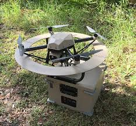

possible equipment
this is a drone that is mainly focused on using height advantage to conduct sdr, wireless routing and visual observation experements.
the teathering on this drone should look like a generator running the power box, or a vehicle running the power box. the power box has a spool of 14-18 ga wire running at higher voltage that will allow more watage at lower amps. the drone will carry an dc/dc converter or a inverto to take AC on the teather and converter. the teather might also have a 4 strand of cat cable (to save weight) for ethernet comms. the cable should have a braided sheath for abrasion protection and just to keep the cable tiddy. the spool sould hvae a cable guiding device on it. i think that ideally there should be some tension kept on the cabe while the drone is in flight.
there seems to be alot of available products for this project, i might be able to just buy bulk cable, premade.
one idea i have is to run the system out of a vehicle top box and have the data piped into a control box in the vehicle. this could have automated systems that keep the drone above the vehicle